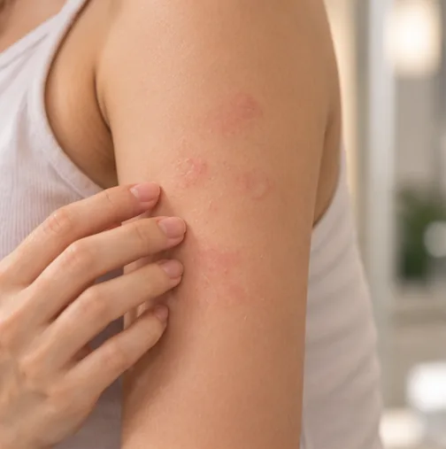

Ruam gatal akibat sejuk
Ruam timbul merah yang gatal pada kulit selepas terkena sejuk
Apa itu
Pada ruam gatal akibat sejuk, kulit bertindak balas terhadap udara, air, makanan atau minuman yang sejuk. Ruam timbul merah yang gatal, kadangkala bengkak, sering muncul apabila kulit menjadi hangat.
- Kulit yang terkena sejuk
- Selepas udara atau air sejuk
- Ruam timbul merah, gatal
- Jumpa doktor
- Doktor keluarga; pakar kulit (dermatologi) atau pakar alahan
- Biasa pada
- Boleh bermula pada mana-mana umur; lebih kerap pada orang dewasa muda
- Berjangkit
- Tidak
- Perjalanan
- Sering berlarutan berbulan atau bertahun dan mungkin reda; doktor boleh menasihati
Tanda biasa

Kulit gatalPruritus 
Rasa hendak pengsanHampir pengsan (presinkop)
Tanda-tanda lain
- Rasa pedih atau menyengat pada kulit di tempat ruam timbul
- Bengkak pada tangan, bibir atau muka, kadangkala selepas minuman sejuk atau ais
- Ruam biasanya hilang dalam beberapa jam apabila kulit menjadi hangat
Mengapa ia berlaku

Punca belum diketahui sepenuhnyaIdiopatik 
Udara kering dan penghawa dinginKelembapan rendah
Punca lain
- Sel dalam kulit melepaskan bahan kimia apabila kulit menjadi sejuk dan kemudian hangat semula
- Kadangkala ia berlaku selepas jangkitan atau bersama masalah kesihatan lain
Jumpa doktor dahulu jika
- Bibir, lidah atau tekak bengkak, sukar bernafas atau berbunyi mengi: hubungi 999
- Rasa hendak pitam, pening atau keliru selepas terkena air sejuk atau mandi air sejuk: hubungi 999
- Ruam yang terasa sakit atau pedih, bertahan lebih sehari, atau meninggalkan lebam
- Demam, menggigil atau sakit sendi bersama ruam
- Reaksi yang kerap berulang atau semakin kuat dari semasa ke semasa
Jika mana-mana berkenaan, sila jumpa doktor sebelum sesi.
Halaman ini ialah maklumat am. Sila terus mengambil ubat biasa anda dan terus berjumpa doktor.
Teruskan mengambil ubat biasa anda dan terus berjumpa doktor. Sesi kami ialah sokongan lembut dan tidak menggantikan rawatan perubatan.
Menjaga diri

Catat simptom andaDiari simptom
Lebih banyak cara menjaga diri
- Pakai pakaian hangat dan tutup kulit semasa angin sejuk, penyaman udara atau hujan sejuk
- Elakkan air sejuk secara tiba-tiba seperti kolam sejuk dan air terjun, dan jangan sekali-kali berenang seorang diri
- Elakkan ais dan minuman yang sangat sejuk jika ia membuat mulut atau bibir gatal atau bengkak
- Jika pernah mengalami reaksi yang kuat, tanya doktor anda tentang pelan kecemasan
Beritahu ahli terapi anda
- Alahan teruk
- Kulit luka, merah atau sakit
- Kehamilan
Ahli terapi anda akan menyemaknya bersama anda sebelum bermula.
Soalan dan jawapan
Apakah Ruam gatal akibat sejuk?
Ruam timbul merah yang gatal pada kulit selepas terkena sejuk. Pada ruam gatal akibat sejuk, kulit bertindak balas terhadap udara, air, makanan atau minuman yang sejuk. Ruam timbul merah yang gatal, kadangkala bengkak, sering muncul apabila kulit menjadi hangat.
Apakah tanda biasa Ruam gatal akibat sejuk?
Kulit gatal · Rasa hendak pengsan
Mengapa Ruam gatal akibat sejuk berlaku?
Punca belum diketahui sepenuhnya · Udara kering dan penghawa dingin
Bagaimana menjaga diri dengan Ruam gatal akibat sejuk?
Catat simptom anda
Bolehkah sesi AI Body Master membantu Ruam gatal akibat sejuk?
Sesi ialah sokongan meridian tanpa jarum yang lembut untuk kesejahteraan anda. Ia tidak merawat atau menyembuhkan Ruam gatal akibat sejuk dan tidak menggantikan ubat atau doktor anda. Beritahu ahli terapi anda sebelum sesi bermula.
Keadaan berkaitan
Rujukan: General information based on public health sources such as Mayo Clinic, NHS, Cleveland Clinic and NCBI StatPearls.
Halaman dikemas kini: 2026-11-01